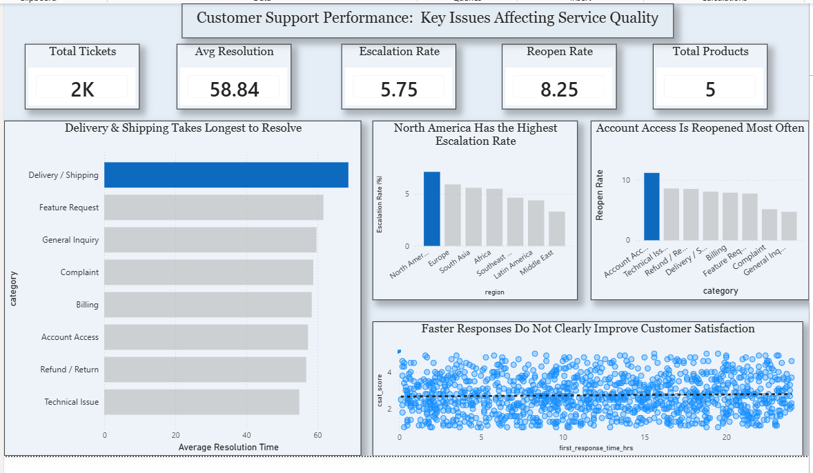

Customer Support Performance Analysis
View Detailed Report
Back To Portfolio
Project Overview
Customer support teams need to understand where service performance is falling behind and which issues have the greatest impact on the customer experience. In this project, I analyzed customer support ticket data to evaluate resolution time, escalation rates, reopen rates, customer satisfaction, first response time, ticket categories, and regional performance.
Goal
To identify the main areas affecting customer support performance, understand where service delays and repeated issues occur, and determine whether faster responses are clearly associated with higher customer satisfaction.
Process
- I prepared and explored customer support ticket data for analysis.
- I used PostgreSQL to answer business questions related to support performance and customer experience.
- I analyzed resolution time, escalation rate, reopen rate, first response time, CSAT, ticket categories, and regional performance.
- I identified categories and regions where support performance required closer attention.
- I built an interactive Power BI dashboard to communicate the findings through KPIs and visual analysis.
Key Insights
- Delivery / Shipping had the highest average resolution time at approximately 69 hours, making it the slowest category to resolve.
- North America recorded the highest escalation rate among the regions analyzed, indicating a higher proportion of tickets requiring escalation.
- Account Access had the highest reopen rate, suggesting that some issues may not be fully resolved during the initial interaction.
- The analysis showed that faster first response times did not clearly translate into higher customer satisfaction, suggesting that response speed alone may not determine the customer's overall experience.
- The dashboard recorded approximately 2K support tickets across 5 product areas, providing a broad view of support performance.
- The findings suggest that improving resolution quality and addressing recurring issues may be more important than focusing only on response speed.
Dashboard Preview
